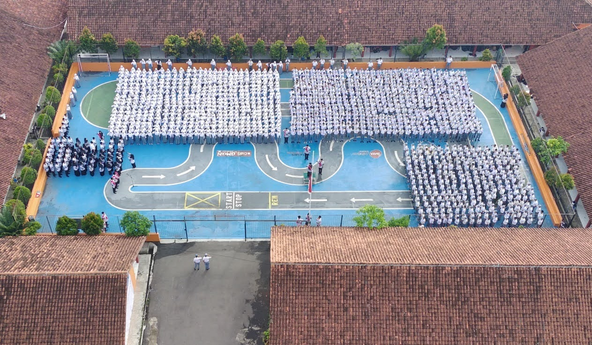

BERITA

Jalan Santai 17 Agustus 2025
Baca Selengkapnya

Assalamualaikum Warahmatullahi Wabarakatuh
Selamat datang di website SMKN 4 Tasikmalaya. Segala puji dan syukur kita panjatkan kehadirat Allah SWT, semoga kita semua ada dalam lindungan-Nya. Dan atas perkenan-Nya pula kami dapat menghadirkan website SMK Negeri 4
Tasikmalaya ini. Kami berharap dengan adanya website di SMK Negeri 4 Tasikmalaya ini para pengunjung dapat mengenal lebih jauh tentang sekolah kami sehingga dapat mempererat tali silaturrahmi antara sekolah dengan masyarakat
demi kemajuan kita bersama.
Tiada gading yang tak retak, website kami ini masih dalam proses pengembangan, masih banyak kekurangan yang harus kami perbaiki. Kritik dan sarannya yang membangun sangat kami harapkan untuk pengembangan ke depan. Akhirnya, saya mengucapkan terimakasih yang sebesar-besarnya kepada semua pihak yang tidak dapat disebutkan satu segala bantuan dan persatu atas fasilitasnya yang telah diberikan semoga semua yang kita lakukan bermanfaat bagi masyarakat. Wassalamu'alaikum Warahmatullahi Wabarakatuh.
Program yang ada di SMKN 4 Tasikmalaya
PPLG adalah program keahlian yang mempelajari pembuatan aplikasi, website, dan game.
Jurusan yang fokus pada jaringan komputer & telekomunikasi.
Jurusan desain visual untuk menyampaikan pesan kreatif lewat gambar.
Jurusan teknik mesin yang fokus pada sepeda motor & bisnisnya.
Jurusan otomasi industri, gabungan mesin, elektronika & kontrol otomatis.